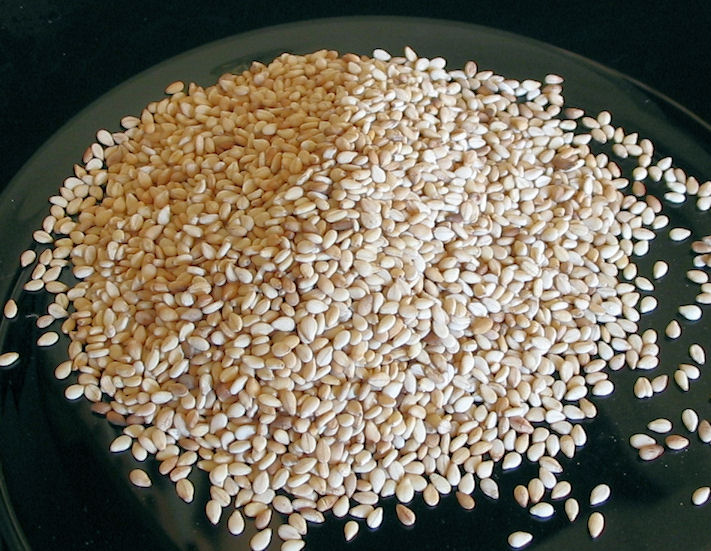
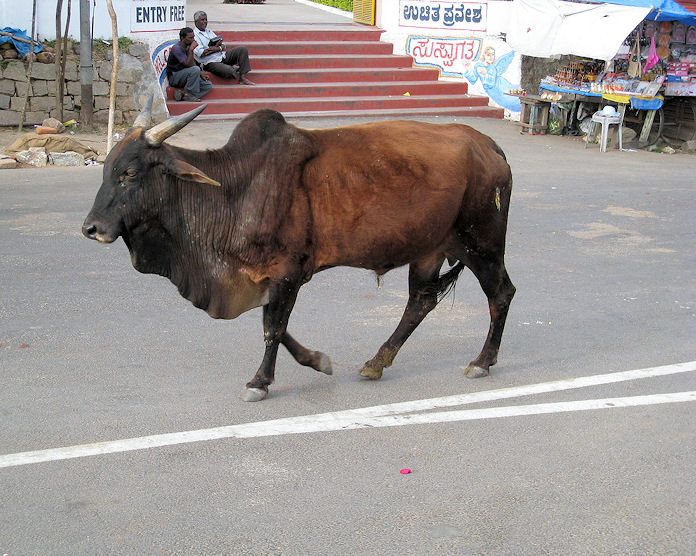

mailto:payer@payer.de
Zitierweise | cite as:
Payer, Alois <1944 - >: Sanskritkurs. -- 34. Lektion 34. -- Fassung vom 2009-01-06. -- URL: http://www.payer.de/sanskritkurs/lektion34.htm
Erstmals hier publiziert: 2008-12-27
Überarbeitungen: 2009-01-06 [Verbesserungen]
Anlass: Lehrveranstaltungen 1980 - 1984
©opyright: Dieser Text steht der Allgemeinheit zur Verfügung. Eine Verwertung in Publikationen, die über übliche Zitate hinausgeht, bedarf der ausdrücklichen Genehmigung des Verfassers
Dieser Text ist Teil der Abteilung Sanskrit von Tüpfli's Global Village Library
Falls Sie die diakritischen Zeichen nicht dargestellt bekommen, installieren Sie eine Schrift mit Diakritika wie z.B. Tahoma.
Die Devanāgarī-Zeichen sind in Unicode kodiert. Sie benötigen also eine Unicode-Devanāgarī-Schrift.
Im klassischen Sanskrit gibt es vom Perfektstamm nur Indikativ und Partizip.
Es gibt zwei Arten der Perfektbildung:
|
Das periphrastische Perfekt (अनुप्रयोगलिट्) wird gebraucht:
|
| Bildung: starker Stamm: Singular Parasmaipada reduplizierte hochstufige bzw. dehnstufige Wurzel + Perfektendung schwacher Stamm: alle übrigen Formen reduplizierte tiefstufige Wurzel + Perfektendung
|
Generell (auch außerhalb des Perfekt) keine Stammabstufung
haben Wurzeln der Form:
Im Perfekt haben außerdem keine Stammabstufung Wurzeln der Form:
|
| 3. Singular | 3. Plural | |
|---|---|---|
| Parasmaipada | -a | -ur |
| Ātmanepada | -e | -re |
| Vor die Endung der 3.pl.Ā (-re) tritt immer der Bindevokal -i-, vor die anderen konsonantisch anlautenden Endungen bei der Mehrzahl der Wurzeln. |
| Für die Reduplikation anlautender Konsonanten
gelten die in Lektion 33 gegebenen
Regeln. Reduplikationsvokal bei konsonantisch anlautenden Wurzeln ist der kurze Wurzelvokal. Diphtonge vor Konsonant werden durch den entsprechenden kurzen Tiefstufenvokal reduziert. ṛ, ṝ, ḷ, und auslautende Diphtonge werden durch -a- redupliziert. |
Beispiele:
Wurzel 3.sg.Perf.P भिद् बिभेद
मुच् मुमोच
भृ बभार
| Einige mit y- bzw. v- anlautende Wurzeln reduplizieren mit i- bzw. u-, das in den schwachen Formen mit dem Wurzelvokal "verschmilzt". |
Beispiele:
Wurzel 3.sg.Perf.P 3.pl.Perf.P वच् उवाच
u-vāc-aऊचुर्
u + uc-urयज् इयाज
i-yāj-aईजुर्
i + ij-ur
| 1. anlautendes a-, ā- wird mit a- redupliziert, sodass ā- erscheint. |
Beispiele:
Wurzel 3.sg.Perf.P अस् 2 "sein" und अस् 4 "werfen" आस
a + as-a
| 2. Wurzeln mit anlautendem i- haben als Reduplikationssilbe im starken Stamm iy-, im schwachen Stamm i-, das mit dem Wurzelvokal zu ī- "verschmilzt. Analoges gilt für anlautendes u-. |
Beispiele:
Wurzel 3.sg.Perf.P 3.pl.Perf.P इ इयाय
iy + ai + aईयुर्
i + iy-urइष् इयेष
iy-eṣ-aईषुर्
i + iṣ-ur
| 3. Wurzeln die mit a- vor zwei Konsonanten oder mit ṛ- anlauten, haben als Reduplikationssilbe ān- |
Beispiele:
Wurzel 3.sg.Perf.P 3.pl.Perf.P अञ्ज् आनञ्ज आनञ्जुर् ऋध् आनर्ध आनृधुर्
Einteilungsprinzip: Besonderheiten der Stammabstufung:
Perfekt Typ I (ohne Stammabstufung) haben Wurzeln der Typen:
|
Beispiele:
Wurzel 3.sg.Perf. 3.pl.Perf. बन्ध् 9P बबन्ध
ba-bandh-aबबन्धुर् जीव् 1P जिजीव जिजीवुर् आप् 5P आप
a + āp-aआपुर् अस् 2P "sein"
अस् 4 "werfen"आस
a + as-aआसुर् अश् आनशे
unregelmäßige Reduplikation!आनशिरे
Gebildet von Verben des Typus:
Bildung:
|
Beispiele:
Wurzel 3.sg.Perf.P 3.pl.Perf.P 3.sg.Perf.Ā 3.pl.Perf.Ā भिद् बिभेद बिभिदुर् बिभिदे बिभिदिरे इस् इयेष ईषुर् मुच् मुमोच मुमुचुर् मुमुचे मुमुचिरे वृत् ववृते ववृतिरे कॢप् चकॢपे चकॢपिरे
क्षिति f. = पृथ्वी = मही = भूमी
शस्य = सस्य n. sg. u. pl.: Saat, Feldfrucht, Getreide
Abb.: सस्यम्
[Bildquelle: Ray Witlin / World Bank. --
http://www.flickr.com/photos/worldbank/2183806492/. -- Zugriff am
2008-12-27. --


 Creative
Commons Lizenz (Namensnennung, keine kommerzielle Nutzung, keine Bearbeitung)]
Creative
Commons Lizenz (Namensnennung, keine kommerzielle Nutzung, keine Bearbeitung)]
यावत् : wie lange wie groß
तावत् : so lange, so groß
उत्तम 3: höchster
द्वीप m.n.: Insel, Kontinent
Abb.: लक्षद्वीपाः = ലക്ഷദ്വീപ് = die 100.000 (लक्ष m.n.) Inseln
(Unionsterritorium)
[Bildquelle: CIA. Public domain]
मर्त्य 3: sterblich (zu मृ)
तिल m.: Sesam(korn) (Sesamum indicum L.)

Abb.: तिलाः
[Bildquelle: Wikipedia. Public domain]
Abb.: Sesamum indicum L.
[Bildquelle: Franz Xaver / Wikipedia. GNU FDLicense]
स्वर्ण n.: (schönfarbig =) Gold
Abb.: स्वर्णम्
Harmandir Sahib = ਹਰਿਮੰਦਰ ਸਾਹਿਬ, Amritsar =
ਅੰਮ੍ਰਿਤਸਰ
[Bildquelle: Wikipedia. GNU FDLicense]
निकेतन n.: Wohnstatt, Tempel
कोटि f.: Spitze; 10 Millionen
श्रेष्ठ 3: bester
तल m.n.: Ebene, Fläche
ऋषभ m.: Stier

Abb.: ऋषभः
Chamundi-Hills
[Bildquelle: Luna Park. --
http://www.flickr.com/photos/lunapark/2124083737/. -- Zugriff am 2008-12-27.
--


 Creative
Commons Lizenz (Namensnennung, keine kommerzielle Nutzung, keine Bearbeitung)]
Creative
Commons Lizenz (Namensnennung, keine kommerzielle Nutzung, keine Bearbeitung)]
यम् 1P यच्छति : zurückhalten, halten, darbieten, gewähren
यम् प्र 1 P प्रयच्छति : hinhalten, anbieten, abliefern
या 2P याति : gehen, fahren
कन्या f.: Mädchen, Jungfrau
Bilden Sie zu folgenden Verbformen die in Person, Zahl und Genus entprechenden Perfektformen:
Übersetzen Sie folgenden Text aus dem पद्मपुराण über Gaben an Brahmanen:
क्षितिं सशस्यां यो दद्याद्ब्राह्मणाय द्विजोत्तम
।
विष्णुलोके सुखं भुङ्क्ते यावदिन्द्राश्चतुर्दश ॥१॥
सप्तद्वीपां महीं दत्त्वा यत्पुण्यं प्राप्यते द्विज
।
तत्पुण्यं प्राप्नुयान्मर्त्यो धेनुं यच्छन्द्विजातये ॥२॥
तिलप्रमाणं स्वर्णं यो ब्राह्मणाय प्रयच्छति ।
हरिनिकेतनं याति युक्तं कोटिकुलैरपि ॥३॥
सालङ्कारां द्विजश्रेष्ठ कन्यां यच्छति यो नरः ।
स गच्छेद्ब्रह्मसदनं पुनर्जन्म न विद्यते ॥४॥
अन्नं वारि द्विजश्रेष्ठ येन दत्तम् महीतले ।
तेन दत्तानि दानानि सर्वाणि च द्विजर्षभ ॥५॥
Erklärungen:
Vokativ sg. der Maskulina / Neutra auf -a lautet auf -a: z.B. देव "Gott!"
चतुर्दश vierzehn
सप्त sieben
जन्म Nom./Akk. sg. zu जन्मन् n. Geburt
सर्व 3 "alle, ganz" (dekliniert nach Pronominaldeklination)
Abb.: सालङ्कारां द्विजश्रेष्ठ कन्यां यच्छति यो नरः ।
स गच्छेद्ब्रह्मसदनं पुनर्जन्म न विद्यते ॥४॥
[Bildquelle: BriceFR. --
http://www.flickr.com/photos/bricecanonne/1350452995/. -- Zugriff am
2008-12-27. --


 Creative
Commons Lizenz (Namensnennung, keine kommerzielle Nutzung, share alike)]
Creative
Commons Lizenz (Namensnennung, keine kommerzielle Nutzung, share alike)]
Zu Lektion 35